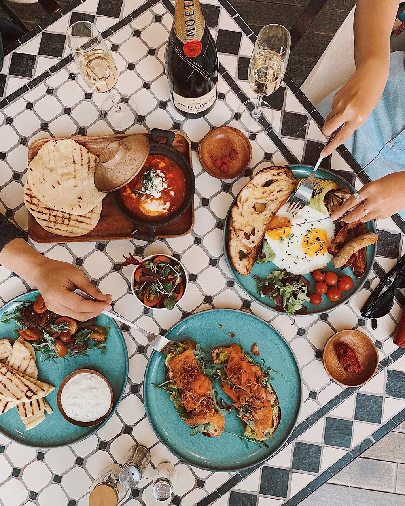

Pomysły na szybkie i zdrowe posiłki

Zdrowe odżywianie – sposób odżywiania, polegający na przyjmowaniu substancji korzystnych dla zdrowia w celu zapewnienia lub poprawy zdrowia. Istotne jest zmniejszenie ryzyka wystąpienia chorób takich jak otyłość, nowotwory, choroby serca. Zdrowa dieta polega na przyjmowaniu odpowiednich ilości niezbędnych składników odżywczych i wody.
Składniki pokarmowe mogą być dostarczane w postaci różnych produktów, dlatego wiele sposobów odżywiania i diet może być uznane za zdrowe.
Źródło: Wikipedia